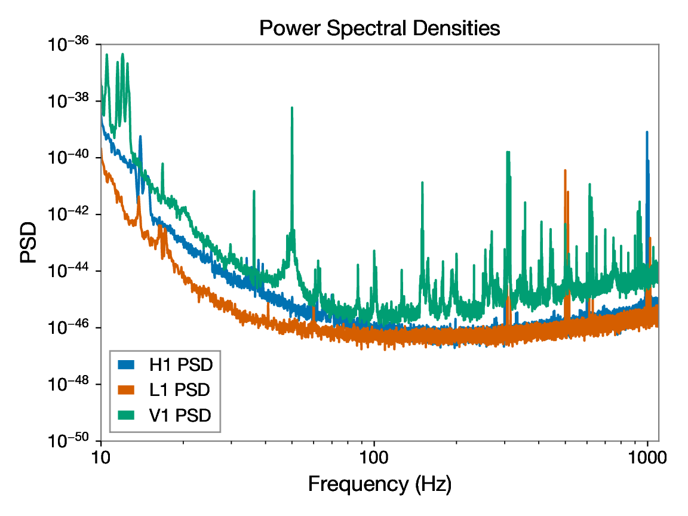
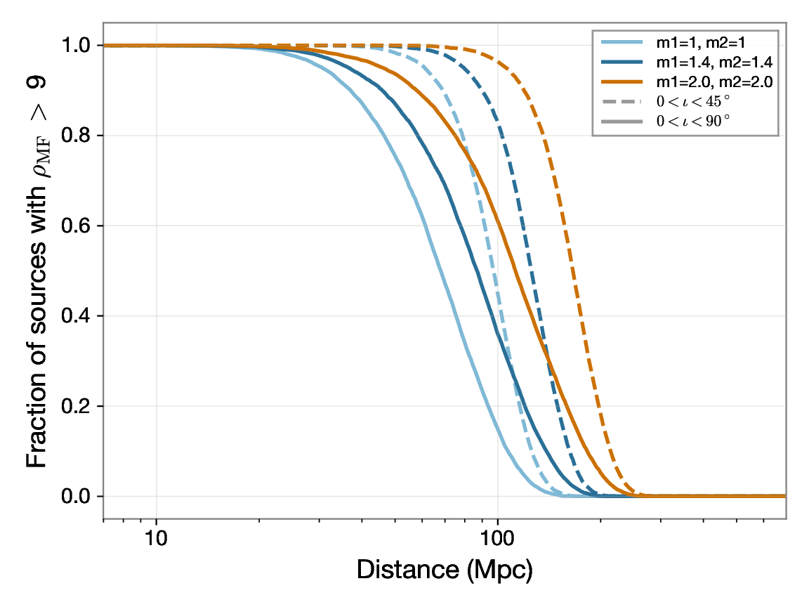
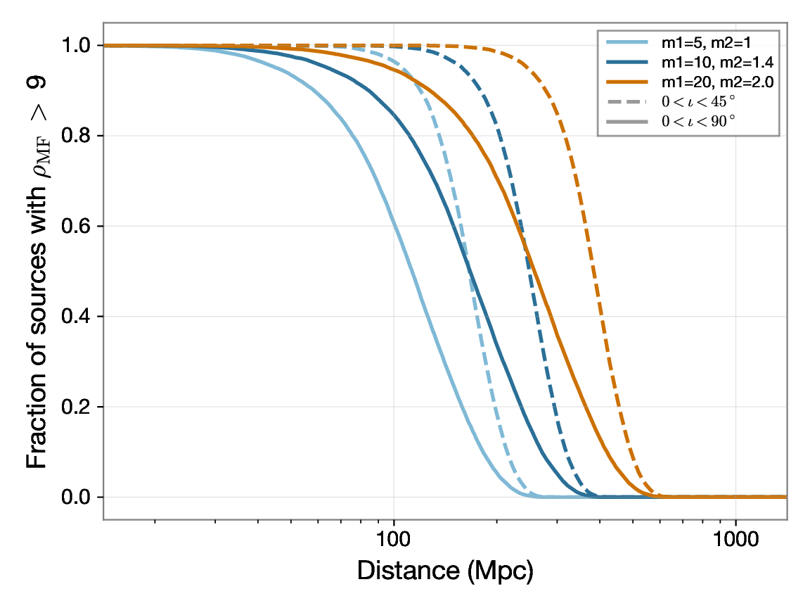
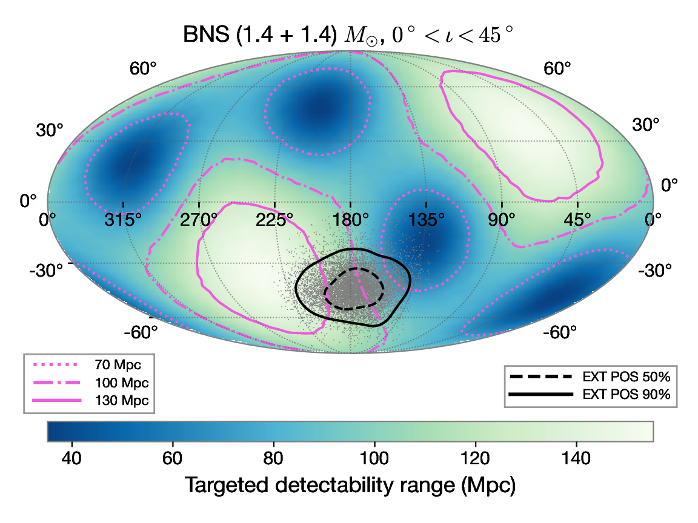

Basic command
tdr --output-dir <output_directory> --t0 <trigger_time> [options]Required inputs
--output-dir: directory where outputs are written.--t0: trigger time in GPS seconds or ISO UTC.- Localization input: either
--ra/--decor--skymap-file.
Command options
| Option | Description |
|---|---|
--ra, --dec |
Localization coordinates in degrees. |
--skymap-file |
HEALPix FITS localization sky map. |
--iota-min, --iota-max |
Custom inclination range. If omitted, defaults are 0-45 and 0-90 deg. The inclination angle is the angle between the orbital plane and the line of sight. It is distributed uniformly in cos(iota) from iota_min to iota_max. |
--snr-threshold |
Detection threshold used for D90 (default 9). |
--snr-type |
mf (matched-filter SNR) or opt (optimal SNR). |
Example of use: GW170817
Example run using the GW170817 sky map:
gw170817/glg_healpix_all_bn170817529_v00.fit.
tdr \
--output-dir /Users/sjs8171/Desktop/gw_tdr_results/GW170817 \
--t0 2017-08-17T12:41:04.444 \
--skymap-file /Users/sjs8171/Desktop/gw_tdr/gw170817/glg_healpix_all_bn170817529_v00.fit \
--snr-threshold 9 \
--snr-type mfDetected IFOs: H1, L1, V1.
Default iota ranges: 0-45 deg and 0-90 deg.
All plots returned by the code
psd_plot.pdf
Power spectral density curves for each interferometer online at the time of the trigger, showing detector noise versus frequency.

bns_targeted_range.pdf
Detection probability for a BNS system as a function of distance, expressed as fraction of detected events with SNR above the chosen threshold.

nsbh_targeted_range.pdf
Detection probability for an NSBH system as a function of distance, expressed as fraction of detected events with SNR above the chosen threshold.

range_map_bns_m1_1.4_m2_1.4.pdf
Sky map of TDR for a 1.4-1.4 M☉ BNS source, assuming an inclination angle between 0 and 45 degrees. The position of the astronomical transient is indicated.

Results tables (default ι ∈ 0° - 45° and 0° - 90°)
BNS Download JSON
| Mass Combination | D90 0° - 45° (Mpc) | D90 0° - 90° (Mpc) |
|---|---|---|
| M_1, M_2 = [1.0,1.0] M☉ | 73.2 | 39.3 |
| M_1, M_2 = [1.4,1.4] M☉ | 95.0 | 48.6 |
| M_1, M_2 = [2.0,2.0] M☉ | 126.3 | 61.3 |
NSBH Download JSON
| Mass Combination | D90 0° - 45° (Mpc) | D90 0° - 90° (Mpc) |
|---|---|---|
| M_1, M_2 = [5.0,1.0] M☉ | 126.6 | 62.0 |
| M_1, M_2 = [10.0,1.4] M☉ | 190.0 | 89.4 |
| M_1, M_2 = [20.0,2.0] M☉ | 294.8 | 135.1 |
Output structure
<output-dir>/
|-- targ_range.log
|-- ifos_used.txt
|-- ifos_used.json
|-- gwosc_cache/
|-- inj/
|-- results/
|-- h1_psd.txt
|-- l1_psd.txt
|-- v1_psd.txt
|-- psd_plot.pdf
|-- bns_targeted_range.pdf
|-- nsbh_targeted_range.pdf
|-- range_map_bns_m1_1.4_m2_1.4.fits
|-- range_map_bns_m1_1.4_m2_1.4.pdf
|-- results_bns.json
`-- results_nsbh.json